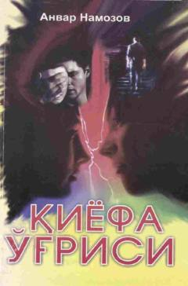

QOHayot sinovlari va tuhmatga qolgan yigitning sarguzasht qissasi.
Ushbu sarguzasht qissada hayot sinovlari, muhabbat va xiyonat girdobida qolgan yigitning taqdiri hikoya qilinadi. Aybsiz bo'la turib tuhmatga qolgan bosh qahramon hayotning kutilmagan sirlari va sinovlari bilan yuzma-yuz keladi.